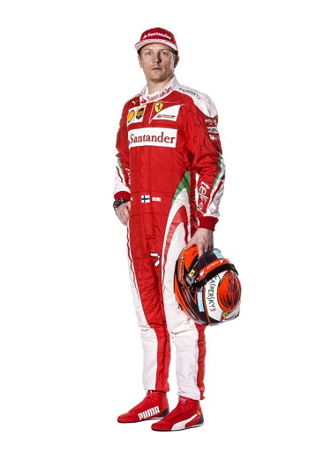

| Шасси: SF 16-H | Мотор: Ferrari |
Резервный пилот: Шарль Леклерк (Монако)
5 Себастьян Феттель

Родился: 3.07.1987 в Хеппенхайме, Германия
Рост: 176 см
Вес: 58 кг
Чемпион мира 2010, 2011, 2012 и 2013 года
Дебют: Гран-При США 2007
Сезонов: 9
Стартов: 158
Побед: 42
Поул-позиций: 46
Лучших кругов: 25
Очков: 1896
Живет в Швейцарии. Гражданский брак, двое детей
Гоночный инженер: Риккардо Адами
7 Кими Райкконен
Родился: 17.10.1979 в Эспо, Финляндия
Рост: 175 см
Вес: 62 кг
Чемпион мира 2007 года
Дебют: Гран-При Австралии 2001
Сезонов: 13
Стартов: 231
Побед: 20
Поул-позиций: 16
Лучших кругов: 42
Очков: 1174
Живет в Швейцарии. Гражданский брак, имеет сына.
Гоночный инженер: Дэвид Гринвуд